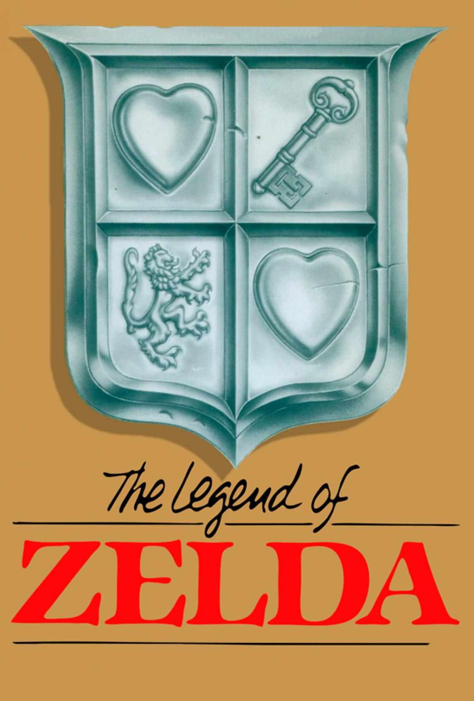
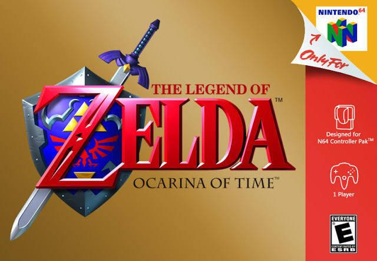

Zelda Info
.jpg)
The legend of zelda a link between worlds
El juego constituye una secuela de A Link to the Past y muchos de sus componentes argumentales, su sistema de juego, y sus componentes artísticos están basados en gran medida en este. En efecto, la historia toma lugar en el mundo de la entrega de SNES seis generaciones después de su final y gira en torno a Link, un joven aprendiz de herrero que se ve en la tarea de salvar a siete seres conocidos como los Siete Sabios con el fin de evitar la resurrección de Ganon. El sistema de juego de esta entrega introdujo nuevos elementos respecto a sus antecesores en la serie, tales como la capacidad del protagonista de transformarse en una pintura y viajar por las paredes y una mayor libertad en las decisiones del jugador
.jpg)
The legend of zelda a wink weaker
La historia del juego se desarrolla, por primera vez en la serie, en un archipiélago de un vasto océano, cien años después de los acontecimientos relatados en The Legend of Zelda: Ocarina of Time;7 el jugador controla a Link, quien lucha contra el malvado Ganondorf por el control de una reliquia sagrada conocida como la Trifuerza. En la mayor parte del juego, el personaje navega por el mar, viaja entre islas y atraviesa mazmorras y templos para obtener el poder necesario con el que enfrentar a Ganondorf. Su aventura comienza una vez que su pequeña hermana es secuestrada por un enorme pájaro que arriba a la isla donde el héroe habita; más tarde, Link descubre que el ave es manipulada por Ganondorf.
The legend of zelda skyward swod
Según la leyenda, miles de años antes del inicio del juego, las tres diosas —Din, Nayru y Farore— crearon el mundo y la vida. Tras hacerlo dejaron en el mundo la Trifuerza, un triángulo sagrado que cumplían el deseo de su poseedor.1112 La diosa Hylia se quedó en el mundo como guardiana de la reliquia. El poder de la Trifuerza despertó la ambición de poder de los demonios, que liderados por su rey, Demise, iniciaron una guerra con el fin de hacerse con el poder sagrado.13 Para prevenir que el rey de los demonios se hiciese con la Trifuerza, Hylia decidió elevar una porción de la tierra con humanos a los cielos y creó una barrera de nubes que los separó del mundo terrestre.13 Tras su decisión, la diosa decidió renunciar a su divinidad para sellar Demise y reencarnar en un cuerpo mortal para detener al mal cada vez que sea necesario
.jpg)
The legend of zelda twilight Princess
un joven campesino que trabaja en la granja del pueblo Ordon, en Hyrule. Un día, los Bulblins —criaturas reminiscentes de los orcos— invaden Ordon y secuestran a los niños. Cuando Link acude a rescatarlos se encuentra con un muro del cual emerge la garra de un «ser de las sombras» que lo transporta al «reino del Crepúsculo», una dimensión que constituye una versión oscura de Hyrule. Link es aprisionado en el Castillo de Hyrule de este lugar y adquiere la apariencia física de un lobo.
Midna, un ser de las sombras, libera a Link con tal de que la «obedezca incondicionalmente». Juntos llegan con la Princesa Zelda, que les informa que Zant, el rey de los Twili —a la que pertenecen las criaturas de las sombras— ha invadido el castillo de Hyrule y sus habitantes se han transformado en «espíritus». Para derrotarlo deben recuperar las «lágrimas de luz» de los «insectos de las sombras» y revivir a los «espíritus de luz». Una vez que rescatan a los niños de Ordon y que recolectan las luces, los espíritus renacidos le devuelven su forma hyliana a Link y revelan la ubicación de las «sombras fundidas», unos fragmentos que conforman una poderosa arma oscura capaz de vencer a Zant. Eventualmente Link es entrenado por el espectro de un espadachín, el «espíritu del héroe», que le instruye sobre técnicas de combate e información sobre su destino.
.jpg)
The legend of zelda a phatom hourglass
La historia sigue a Link y Tetra, quienes viven en Hyrule, reino que en esta ocasión, al igual que en The Legend of Zelda: The Wind Waker, se encuentra hundido en el Gran Mar. Mientras viajan en el barco pirata de Tetra, esta y Link encuentran un barco fantasma. Inmediatamente después de que Tetra sube al barco, grita buscando ayuda. Cuando Link intenta seguirla, se resbala y cae en el océano, y posteriormente llega a la orilla de una isla y es despertado por Ciela, un hada. Al explorar la isla, Link encuentra el «Reloj Espectral» («Phantom Hourglass» en inglés), lleno de la «Arena de las Horas», y conoce a un hombre anciano llamado Oshus, quien quiere ayudar a Link a encontrar el barco fantasma y, de esta manera, reunirse con Tetra. Para guiarlo en su búsqueda, Link consigue la ayuda del Capitán Linebeck y su barco, el S.S. Linebeck, el cual Link, Ciela y Linebeck usan para visitar islas.12 Mientras Linebeck al principio se rehúsa a colaborar con los dos, Ciela hace mención de un enorme tesoro que lo impulsa a aceptar ayudarlos.
The legend of zelda minish cap
La aventura comienza cuando Link es elegido por el rey de Hyrule para pedir ayuda a los minish debido a que Vaati ha petrificado a la Princesa Zelda. Link fue elegido porque sólo los niños pueden ver a los minish.910 Durante su viaje, rescata a Ezero, un extraño ser que se parece a un gorro verde con cabeza de pájaro, quien se une a su búsqueda y le ayudará a hacerse del tamaño de los minish cuando sea preciso. Aunque no se revela al principio, él y Vaati fueron antaño minish: Ezero, un renombrado y sabio artesano y Vaati, su aprendiz. Vaati se volvió corrupto por la locura y odiado por los hombres, tomó un sombrero mágico que Ezero había hecho para los humanos de Hyrule.1112 El sombrero cumple cualquier deseo hecho por el que lo lleve y Vaati pidió convertirse en un poderoso guerrero. Entonces convirtió a su viejo maestro, quien intentó detenerle, en un sombrero. Con la ayuda de Ezero, Link reunirá los cuatro elementos y los usará para restaurar la espada minish y convertirla en la Espada Cuádruple,13 capaz de destruir a Vaati.14

The legend of zelda
La trama de The Legend of Zelda es relatada a través del manual de instrucciones y en una pequeña secuencia introductoria antes de la escena donde aparece el título del juego, una vez que el mismo empieza a reproducirse. Un pequeño reino dentro de la tierra de Hyrule —el cual es el lugar donde se desarrollan los principales acontecimientos—, es asolado por el caos después de que un ejército liderado por Ganon, el Príncipe de la Oscuridad, lo invadiera y robara la Trifuerza del Poder, un fragmento que forma parte de un artefacto mágico capaz de otorgar a su poseedor una poderosa fuerza física.29 En un intento por evitar que Ganon adquiriera la Trifuerza de la Sabiduría —otra de las piezas de ese artefacto—, la Princesa Zelda decide dividirla en ocho fragmentos diferentes los cuales oculta a lo largo de diversos calabozos que se ubican a lo ancho de la vasta tierra.29 Poco antes de que la princesa fuera secuestrada por Ganon, ella le encomienda a Impa, su niñera, que encuentre a alguien verdaderamente valiente para afrontar el mal y así salvar al reino de la perdición.
The legend of zelda adventure of link
Poco después de los hechos de The Legend of Zelda, cerca del 16º cumpleaños de Link, este se da cuenta de que una extraña señal le ha aparecido en el dorso de su mano izquierda. Busca a Impa, y ella le cuenta la Leyenda de Zelda. Hacía tiempo, el Rey de Hyrule gobernaba la tierra de Hyrule con un hijo y una hija. Cuando el rey murió, la Trifuerza debería haber pasado al Príncipe. Sin embargo, sólo podía heredar la Trifuerza en parte, y así buscó las partes restantes. Cuando oyó que Zelda sabía el lugar en que se hallaban, fue a preguntarle. Ella lo rechazó y el Príncipe envió a su hechicero a interrogarla. Cuando falló en su intento de sonsacar información, se puso furioso y lanzó un hechizo de sueño sobre la Princesa Zelda. El hechicero cayó muerto, pero dejaron al Príncipe con la pena por lo que había causado. Para asegurarse de que este hecho no se olvidaría, el Príncipe ordenó que todas las mujeres de la familia real que nacieran en adelante serían llamadas "Zelda".
The legend of zelda majoras mask
omienza con Link (el Héroe del Tiempo) cabalgando a su yegua, Epona, a través de los Bosques perdidos después de los eventos ocurridos en The Legend of Zelda: Ocarina of Time. Link, que tras volver a su época original partió en un viaje en busca de su hada Navi. (La cuál se marchó en el Templo del Tiempo, luego de cumplir con la promesa que le hizo al Gran Árbol Deku de ayudar a Link en su travesía por Hyrule). Mientras continúa su viaje, Link es asaltado por un enmascarado Skull Kid junto a dos hadas hermanas, Taya y Tael, que le roban la Ocarina del Tiempo y se llevan a Epona. Link los sigue y acaba cayendo por un profundo agujero oscuro, en un claro guiño a la obra literaria de Lewis Carroll: "Alicia en el País de las Maravillas". Al final del agujero, se vuelve a encontrar con el Skull Kid, que le dice a Link que se ha librado de su caballo por no obedecerle y le transforma en un matorral Deku. Tras esto, huye apresuradamente junto con Tael, pero dejando a Taya atrás, que no consigue alcanzarlos. Taya acuerda ayudar a Link a encontrar a su amigo el Skull Kid para poder volver a reunirse con él y con su hermano.

The legend of zelda adventure of link
Aproximadamente diez años antes de los eventos acontecidos en Ocarina of Time ocurrió una guerra conocida como la «Guerra Carcelaria de Hyrule». A causa de ella, una madre desesperada por proteger a su bebé, decidió dejarlo en un espeso y recóndito bosque con el fin de que creciera a salvo.44 En dicho bosque, habitan varios niños que tienen sus propias hadas guardianes, las cuales se les fueron otorgadas a su vez por el Venerable Árbol Deku, el guardián del bosque, a excepción de un niño: el pequeño hijo de aquella mujer.45 Este niño se llama Link y, debido a que no posee un hada, los demás Kokiri se burlan de él y lo menosprecian.46 Un día, un moribundo Árbol Deku le envía a Link un mensaje con el hada Navi. El juego comienza cuando Navi despierta a Link de una pesadilla: en ella, Link observa durante una noche tormentosa cómo un hombre montado en un caballo —el cual resulta ser Ganondorf—, persigue a la Princesa Zelda junto con su niñera Impa, quien cabalga también en un caballo. Navi le avisa a Link que debe ir con el guardián de su aldea, el Venerable Árbol Deku, pues este se encuentra moribundo.;47 más tarde, el propio Link deshace la maldición, pero no es capaz de evitar que el árbol muera. Antes de fallecer, el Árbol Deku le informa que un «perverso hombre del desierto» fue quien lo maldijo, y que además planea conquistar toda la tierra de Hyrule, por lo que el muchacho debe detener sus planes. Asimismo, le entrega la Esmeralda Kokiri —considerada como la «Piedra del Bosque»— y lo envía al castillo de Hyrule para que pueda hablar con la «princesa del destino»: Zelda.48
The legend of zelda oracles of season and age
Seasons empieza cuando Link siente la llamada de la Trifuerza, que se encuentra en el interior del Castillo de Hyrule. Link se acerca y es teletransportado a un bosque oscuro donde se encuentra a un grupo de viajeros liderados por una bailarina llamada Din. Tras darle ésta la bienvenida a Holodrum, el cielo se cubre de nubes oscuras. Una voz desde las nubes se dirige a Din como el «Oráculo de las Estaciones» y se presenta como Onox, General de la Oscuridad. Seguidamente, un remolino absorbe a Din y la transporta a las alturas; el resto fueron empujados al suelo. Tras disiparse las nubes, las estaciones de Holodrum empiezan a cambiar rápidamente.7 Como en Seasons, la Trifuerza llama a Link. Link es transportado a un bosque en la tierra de Labrynna, donde escucha unos gritos. En un claro del bosque, encuentra a una mujer rodeada de monstruos. Cuando los monstruos ven a Link, se dispersan en todas direcciones. La mujer es la aya de la Princesa Zelda, Impa, que le pide ayuda para buscar a una cantante.12 Tras andar un trecho por el bosque, encuentran a una joven con pelo azul cantando sobre el tocón de un árbol. Su nombre es Nayru. De repente, una sombra surge del interior de Impa y se presenta como Veran, Hechicera de las Sombras. Veran se introduce en el cuerpo de Nayru y la posee. Más adelante se revela que Nayru es el «Oráculo de los tiempos»; su secuestro provoca un trastorno en la transición del tiempo en Labrynna.12
The legend of zelda adventure of link
Diez mil años antes del comienzo del juego, Hyrule es una civilización avanzada que construyó cuatro enormes máquinas con formas de animales llamadas bestias divinas y una legión de guardianes para protegerse de Ganon.17 Cuando Ganon regresó, fue derrotado por una princesa con la ayuda de los cuatro campeones y un caballero.18
Unos nueve mil novecientos años después, los habitantes de Hyrule se enteraron por medio de una profecía de que se avecinaba el «Gran Cataclismo». La princesa Zelda entrena para despertar su poder y sellar a Ganon, Link es elegido como el portador de la Espada Maestra, mientras que Daruk, Revali, Mipha y Urbosa son elegidos para pilotar a las bestias divinas.19 Sin embargo, Ganon ideó un plan para contrarrestar los intentos defensas, corrompiendo a todas las máquinas, matando a los campeones y diezmando al reino.20 Link queda gravemente herido en la batalla y es llevado a una cámara de resurrección conocida como el santuario de la vida, mientras que Zelda usa su magia para atrapar a Ganon.2122
The legend of zelda links awakening
Tras los sucesos de A Link to the Past,17 el héroe Link emprende un viaje para entrenarse frente a futuras amenazas.5 Durante una tormenta, el barco en el que viaja naufraga, arrastrando a Link hasta las playas de la Isla Koholint (コホリント島 Kohorinto-tō?). Allí despierta en la casa de un hombre llamado Tarin que vive con su hija Marin, quien lo encontró en la playa inconsciente y lo llevó a casa.18 Marin está fascinada con Link y el mundo exterior y le cuenta con nostalgia que le gustaría ser una gaviota para poder cruzar el océano algún día y cantar para el resto del mundo.19 Tras recuperar su espada en las playas de Koholint, un misterioso búho le explica a Link que para volver a casa debe despertar al guardián de Koholint, el Pez Viento (かぜのさかな Kaze no Sakana?), que duerme en un huevo gigante en lo alto de la Montaña Tamaranch, en la Cordillera Tal Tal. Sólo podrá ser despertado si se tocan los ocho instrumentos de las Sirenas ocultos en la isla. Por todo Koholint criaturas horribles intentarán impedir que Link despierte al Pez Viento dado que quieren gobernar el mundo imaginario creado por sus sueños.
j